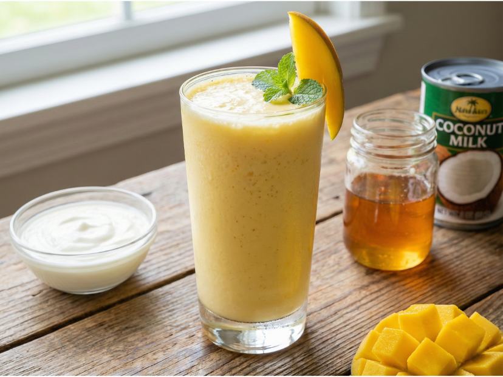

Zutaten
| Zutaten |
Menge |
| Mango |
4 |
| Eiswürfel |
5 |
| Wasser (kalt) |
200 ml |
| Honig |
1 EL |
| Joghurt Pur |
300 g |
| Kokusmilch |
100 ml |
Schritte
- Mangos schälen und in Würfel schneiden.
-
Mangos, Eiswürfel, kaltes Wasser, Honig und Joghurt in den Standmixer
geben.
-
Für ca. 2 – 3 Min. auf höchster Stufe mixen, bis alles sämig ist.
-
Kokosmilch hinzugeben und für ca. weitere 1 – 2 Min. mixen, bis alles
gut verbunden ist. Frisch genießen!